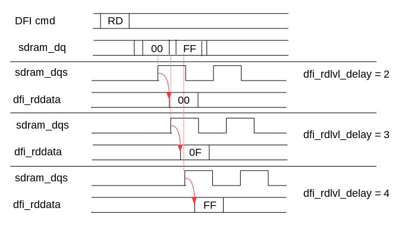

ehl_ddr предназначен для преобразования транзакций на шине AXI в транзакции на шине DFI (и далее через PHY в SDRAM). Контроллер имеет ряд управляющих и статусных регистров, определяющих процесс преобразования. В таблице приведен перечень программно управляемых регистров ehl_ddr.
| Регистр | Адрес | Описание |
|---|---|---|
| DDR_MR0 | 0x0 | Регистр MR0 SDRAM |
| DDR_MR1 | 0x4 | Регистр MR1 SDRAM |
| DDR_MR2 | 0x8 | Регистр MR2 SDRAM |
| DDR_MR3 | 0xC | Регистр MR3 SDRAM |
| DDR_TYPE | 0x10 | Регистр структуры памяти |
| DDR_TIME0 | 0x14 | Регистр временных параметров 0 |
| DDR_TIME1 | 0x18 | Регистр временных параметров 1 |
| DDR_ODT | 0x1c | Регистр маски ODT |
| DDR2_CTRL | 0x20 | Регистр управления SDRAM |
| DDR3_CTRL | 0x24 | Регистр управления функциями DDR3 |
| DDR_PHY | 0x28 | Регистр характеристик PHY |
| DDR_CMD | 0x30 | Регистр команд SDRAM |
| DDR_ECC_FIFO_LSB | 0x34 | Регистр адресов ошибок 1 |
| DDR_ECC_FIFO_MSB | 0x38 | Регистр адресов ошибок 2 |
| DDR_EC | 0x3c | Регистр обнаружения ошибок |
| DDR_ECC_SE_PAT0 | 0x40 | Регистр диагностики одиночных ошибок 0 |
| DDR_ECC_SE_PAT1 | 0x44 | Регистр диагностики одиночных ошибок 1 |
| DDR_ECC_SE_PAT2 | 0x48 | Регистр диагностики одиночных ошибок 2 |
| DDR3_RESET | 0x4c | Регистр временной диаграммы сброса |
| DDR3_ZQ | 0x50 | Регистр периода ZQ калибровки |
| FPGA_CTRL | 0x54 | Регистр управления UniPHY |
| DDR_BYTE0 | 0x58 | Регистр Byte 0 Status |
| DDR_BYTE1 | 0x5c | Регистр Byte 1 Status |
| DDR_BYTE2 | 0x60 | Регистр Byte 2 Status |
| DDR_BYTE3 | 0x64 | Регистр Byte 3 Status |
| DDR_BYTE4 | 0x68 | Регистр Byte 4 Status |
| DDR_BYTE5 | 0x6c | Регистр Byte 5 Status |
| DDR_BYTE6 | 0x70 | Регистр Byte 6 Status |
| DDR_BYTE7 | 0x74 | Регистр Byte 7 Status |
| DDR_BYTE8 | 0x78 | Регистр Byte 8 Status |
| DDR_CFG | 0x7c | Регистр конфигурации контроллера |
Перед использованием контроллера его следует инициализировать. Инициализация включает в себя запись в регистры настроек, соответствующих реальным значениям тактовой частоты SDRAM, структур микросхем памяти и PHY, управляемых контроллером, процедуру инициализации SDRAM, тренинг положения маски строба, тренинг положения строба. Последовательность описана далее:
Замечание. Процедура инициализации сторонних PHY (PHY_TYPE != 0) может отличаться. Требуется проконсультироваться с документацией на PHY.
1. Запуск таймера после подачи питания.
2. Выполнить инициализацию DLL в соответствии с описанием из раздела "Изменение тактовой частоты".
3. Задать поддерживаемый протокол памяти в DDR_CTRL.DM. DDR2 в случае PHY_TYPE=0.
4. Запись в регистр DDR_MR0 (Write Recovery, CAS Latency и Burst Length).
5. Запись в регистр DDR_MR1 (Enable_DQSn, DLL Enable, Additive Latency и Termination Resistor).
6. Запись в регистр DDR_MR2 (High-Temperature Self-Refresh).
7. Запись в регистр DDR_TYPE значений структуры памяти (раздел "Кодирование адресов") и соответствие сигналов dfi_cs_n чипам памяти.
8. Запись в регистр DDR_PHY характеристик PHY.
9. Запись в регистр DDR_ODT параметров шумоподавляющих резисторов.
10. Запись в регистры DDR_TIME0 и DDR_TIME1 временных характеристик в соответствии с заданной тактовой частотой контроллера (частота задается независимо от ehl_ddr).
11. Дождаться, пока таймер отсчитает 200 мкс с момента подачи питания.
12. Запустить инициализацию установив DDR_CMD.STI. [A-5-2-0]
13. Дождаться окончания инициализации - сброс бита DDR_CMD.STI.
Время инициализации DDR2 между установкой и сбросом DDR_CMD.STI может быть оценено по следующей формуле: 1 + CDC_SYNC_STAGE + 1 + 1 + (8+tRP) + 4*(1+tMRD) + (1+tRP) + 8*(1+tRFC)+3*(1+tMRD) + CDC_SYNC_STAGE + 1.
Например, для частоты 400 МГц оно может составлять: 1+2+1+1+8+6+4*3+7+8*132+3*3+3 = 1106 тактов mctrl_clk.
14. Запись в регистр DDR2_CTRL разрешения периодического обновления памяти, номинала резисторов ODT.
15. Провести процедуру Gate Training установив бит DDR_CMD.RGT. Дождаться окончания выполнения процедуры отслеживая данный бит. Процедуру следует проводить с выключенным режимом коррекции ошибок DDR_EC.
16. Записать значение 0xFF-0x00 по адресу 0x0 на шине AXI контроллера (адрес может отличаться от 0x0, если контроллер имеет смещенный базовый адрес) с шириной данных равной ширине системной шины. Поскольку контроллер записывает данные в SDRAM порциями размером Burst Length, следует записать количество данных, соответствующих DDR_MR0.BL.Дождаться завершения транзакции по WRITE RESPONSE CHANNEL. В случае мультиранковых систем указанные данные следует размещать по адресу 0x0 для каждого ранка, присутствующего в системе.
17. Если контроллер поддерживает режим коррекции ошибок, то следует записать данные аналогично предыдущему пункту в режиме тестирования блока контрольных разрядов (DDR_EC.mode равен 0b10).
18. Режим коррекции следует отключить на время проведения процедуры Data Eye Training (DDR_EC.mode равен 0b00). Провести процедуру Data Eye Training установив бит DDR_CMD.RDET. Дождаться окончания выполнения процедуры отслеживая данный бит.
19. Если предполагается использование режима коррекции ошибок, то всю используемую область памяти следует инициализировать с включенным режимом коррекции ошибок для записи проверочного кода. Ширину транзакций AXI следует выбрать максимальной для системной шины (параметр AXI_WIDTH).
Контроллер готов к использованию.
Стандарт DDR2 определяет режим управления шумоподавляющими резисторами. Управляет резисторами контроллер памяти. Резисторы предназначены для улучшения целостности сигналов и сокращения количества внешних компонент на печатной плате.
ehl_ddr управляет резисторами памяти через вывод dfi_odt (sdram_odt PHY), если данная функция включена в PHY_IO_CTRL.ODT (при значении отличном от 0). Управление резисторами контактных площадок контроллера должно осуществляться в PHY. В режиме чтения из памяти PHY должен включать резисторы в контактных площадках синхронно с данными. В режиме записи PHY должен выключать резисторы в контактных площадках. В режиме чтения/записи контроллер включает резисторы неактивных чипов памяти, и отключает резисторы адресуемых чипов.
Согласно [1] номинал резисторов для выводов DQ, DQS, DQS_n, DM памяти и контроллера (точнее контактных площадок) может иметь значения 50 Ом, 75 Ом, 150 Ом или бесконечность. Управление значением номинала контроллера осуществляется с помощью PHY_IO_CTRL.ODT. Значение регистра должно управлять номинальным сопротивлением контактных площадок через вывод odt ehl_ddr. Управление значением номинала резисторов в памяти осуществляется с помощью DDR_MR1.TRL и DDR_MR1.TRH и требует процедуры LOAD-MODE-REGISTER (DDR_CMD.LMRA = 1) для записи значения в память.
Замечание. Номиналы резисторов PHY и памяти задаются независимо и могут отличаться.
Рисунок 4. Запись в память с включенным режимом ODT
Рисунок 5. Чтение из памяти с включенным режимом ODT
Согласно [1] время включения резисторов составляет 2 такта sdram_ck, время выключения 2.5 такта sdram_ck. ehl_ddr включает резисторы таким образом, что шумоподавляющие резисторы активны на протяжении всего трансфера [A-5-3-0] (включение - красные линии на Рисунок 4/Рисунок 5, выключение - синие линии на Рисунок 4/Рисунок 5). В случае непрерывной передачи (несколько команд записи/чтения) ehl_ddr удерживает резисторы включенными на протяжении всего трансфера [A-5-3-1]. В случае, если трансфер требует обращения к двум чипам памяти, управляемым независимыми sdram_odt, контроллер добавляет цикл паузы между трансферами, чтобы обеспечить корректное включение/выключение резисторов (а также освобождение шин DQ/DQS/DM, которые управляются различными чипами памяти). [A-5-3-2]
Стандарт DDR3 задает параметры ODTLon и ODTLoff, определяющие момент включения/выключения шумоподавляющих резисторов относительно сигнала ODT. Это время равняется CWL + AL - 2, т.е. эквиваленто Write Latency - 2 для чтения и записи. Данное условие приводит к тому, что ODT должен переключаться одновремено с командой записи, и через RL - WL тактов после команды чтения и оставаться активным на протяжении 4 (ODTH4) или 6 (ODTH8) тактов после этого в зависимости от Burst Length (BL4 и BL8 соответственно).
Замечание. Процедуры тренинга используются только для режимов DDR2 при использовании ehl_ddr_phy. Для других PHY логика тренингов встроена в состав PHY. Следует обратиться к документации на PHY для уточнения необходимой процедуры тренингов.
Замечание. В мультиранковых системах (RANK_CNT > 1) возможно, что время прихода сигналов от различных ранков памяти при чтении отличается, поэтому тренинг следует проводить для каждого из присутствующих ранков путем использования DDR2_CTRL.ERT. При этом следует запрограммировать DDR_TYPE.MCx перед проведением тренингов, и учесть, что адрес для тренинга выбирается без учета измененных значений DDR_TYPE.MCx. Т.е. если чипы были переставлены с 0-1-2-3 в 0-1-3-2, то для проведения тренинга RANK3, следует установить DDR2_CTRL.ERT[2] и наоборот - для RANK2 - DDR2_CTRL.ERT[3].
Для обеспечения корректного функционирования PHY должен быть инициализирован и настроен в соответствии с характеристиками системы памяти. Для проверки временных характеристик и адаптации к системе используются процедуры тренинга. При запросе проведения тренинга ehl_ddr переходит в один из двух режимом тренинга: тренинг положения маски стробов (Gate Training) или тренинг положения стробов (Data Eye Training). По окончании тренинга коэффициенты записываются в регистры ehl_ddr. Значения коэффициентов могут быть записаны через AHB без проведения тренингов. Коэффициенты рассчитываются независимо для каждого байта данных и проверочных бит SDRAM (параметры SDRAM_WIDTH и ECC_ENA). Последовательность запуска выполнения тренингов описана в разделе "Инициализация контроллера". Аппаратура для проведения тренингов находится в PHY. ehl_ddr инициирует тренинги и анализирует их результаты.
Положение маски стробов [2, раздел 4.9.4.1.1 - gate training] dfi_rddata_en рассчитывается путем захвата сигнала sdram_dqs (подключенного к PHY) нарастающим фронтом dfi_rddata_en, задержанного в соответствии с заданным коэффициентом dfi_rdlvl_gate_delay (Рисунок 6). Расширение диапазона ожидания строба доступно с помощью старшего бита dfi_rdlvl_gate_delay (регистры DDR_BYTEx.GTRy[3]). Если соответствующие биты установлены PHY использует в качестве маски сигнал dfi_rddata_en, задержанный на 1 такт синхросигнала памяти. Таким образом достигается покрытие 2 тактов при поиске валидного положения маски.
Результат тренинга записывается в dfi_rdlvl_resp. Каждому байту данных соответствует своё значение dfi_rdlvl_resp, ассоциированное с соответствующим sdram_dqs.
Для набора коэффициентов dfi_rdlvl_gate_delay составляется таблица значений dfi_rdlvl_resp. В соответствии с таблицей ehl_ddr производит выбор положения маски. Первая 1 в таблице результатов означает положение смещенной маски не более, чем в 45 градусах от фронта sdram_dqs. Оптимальное значение dfi_rdlvl_gate_delay задается после тренинга на 2 меньше текущего значения при получении первой единицы на dfi_rdlvl_resp (0b010 для следующей таблицы). [A-5-4-0]
| dfi_rdlvl_gate_delay | dfi_rdlvl_resp |
|---|---|
| 0000 | 0 |
| 0001 | 0 |
| 0010 | 0 |
| 0011 | 0 |
| 0100 | 1 |
| 0101 | 1 |
| 0110 | 1 |
| 0111 | 1 |
| 1000 | 0 |
| 1001 | 0 |
| 1010 | 0 |
| 1011 | 0 |
| 1100 | 1 |
| 1101 | 1 |
| 1110 | 1 |
| 1111 | 1 |

Рисунок 6. Тренинг положения маски строба DQS
Тренинг положения стробов [2, раздел 4.9.4.1.1 - data eye training] выполняется для gated версии сигнала sdram_dqs (sdram_dqs_n использует тот же коэффициент). Перед процедурой следует записать по нулевому адресу данные вида 0xFF00FF00. В зависимости от параметров AXI_WIDTH и SDRAM_WIDTH записываемые данные должны иметь следующий вид (младший байт 0x00 соответствует наименьшему адресу, т.е. 0x0 в Big Endian):
1. AXI_WIDTH = 32 и SDRAM_WIDTH = 8: 0xFF00FF00
2. AXI_WIDTH = 32 и SDRAM_WIDTH = 16: 0xFFFF0000
3. AXI_WIDTH = 64 и SDRAM_WIDTH = 8: 0xFF00FF00FF00FF00
4. AXI_WIDTH = 64 и SDRAM_WIDTH = 16: 0xFFFF0000FFFF0000
5. AXI_WIDTH = 64 и SDRAM_WIDTH = 32: 0xFFFFFFFF00000000
6. AXI_WIDTH = 128 и SDRAM_WIDTH = 16: 0xFFFF0000FFFF0000FFFF0000FFFF0000
7. AXI_WIDTH = 128 и SDRAM_WIDTH = 32: 0xFFFFFFFF00000000FFFFFFFF00000000
8. AXI_WIDTH = 128 и SDRAM_WIDTH = 64: 0xFFFFFFFFFFFFFFFF0000000000000000
Далее происходит чтение из памяти для каждого значения dfi_rdlvl_delay (Рисунок 7) для каждой байтовой линии данных.
Если для всех значений dfi_rdlvl_delay прочитанные данные совпадают с ожидаемым значением (0x00), оптимальный результат соответствует смещению 90 градусов. В противном случае выбирается середина интервала, на котором были получены ожидаемые значения.
Рисунок 7. Тренинг положения строба DQS
Тренинг положения маски и стробов может быть выполнен в одном из двух режимов: автоматическом или ручном.
В автоматическом режиме следует выполнить следующую последовательность:
Замечание. Установка DDR_EC.MODE=0b00 позволяет избежать генерации прерываний от схемы проверки кода Хэмминга. При этом тренинг будет проводиться для всех байтовых линий, включая линию проверочных бит.
Если результаты автоматического тренинга не приводят к стабильной работе контроллера, то следует провести тренинги в ручном режиме. Изначально проверить стабильность работы можно записав и прочитав тестовые данные по выбранному адресу памяти перед началом работы.
В ручном режиме следует выполнить следующую последовательность:
Декодер адреса в составе контроллера производит преобразование адреса AXI в физический адрес памяти. Декодирование состоит из нескольких операций:
1. Преобразование байтового адреса AXI в адрес DFI. Ширина интерфейса DFI определяется параметром SDRAM_WIDTH. За 1 такт через DFI в формате HDR передаются данные для четырех последовательных адресов в памяти. Таким образом, параметр SDRAM_WIDTH определяет количество младших бит адреса AXI, которые не участвуют в формировании адреса SDRAM.
2. Преобразование адреса DFI в адрес стеков, чипов, банков (и групп), строк и столбцов. Декодирование происходит в зависимости от сконфигурированного типа памяти.
Конфигурации x16 не поддерживаются в режиме SDRAM_WIDTH=8.
Замечание. Приведенная ниже таблица соответствует DDR_TYPE.BGD=0. Для DDR_TYPE.BGD=1 адрес "группа банков"[0] размещается между адресами "столбец"[2] и "столбец"[3]. Рекомендации по использованию см. в разделе "Использование адресов групп банков".
Замечание. Приведенная ниже таблица представлена для случая с RANK_CNT=4. Для меньших значений, соответствующие биты адреса "чип" следует исключить.
| стек | чип | строка | банк | группа банков | столбец | |||||||||||||||||||||||||||||||||||
|---|---|---|---|---|---|---|---|---|---|---|---|---|---|---|---|---|---|---|---|---|---|---|---|---|---|---|---|---|---|---|---|---|---|---|---|---|---|---|---|---|
| SDRAM_WIDTH=8 | 38 | 37 | 36 | 35 | 34 | 33 | 32 | 31 | 30 | 29 | 28 | 27 | 26 | 25 | 24 | 23 | 22 | 21 | 20 | 19 | 18 | 17 | 16 | 15 | 14 | 13 | 12 | 11 | 10 | 9 | 8 | 7 | 6 | 5 | 4 | 3 | 2 | 1 | 0 | |
| SDRAM_WIDTH=16 | 38 | 37 | 36 | 35 | 34 | 33 | 32 | 31 | 30 | 29 | 28 | 27 | 26 | 25 | 24 | 23 | 22 | 21 | 20 | 19 | 18 | 17 | 16 | 15 | 14 | 13 | 12 | 11 | 10 | 9 | 8 | 7 | 6 | 5 | 4 | 3 | 2 | 1 | ||
| SDRAM_WIDTH=32 | 38 | 37 | 36 | 35 | 34 | 33 | 32 | 31 | 30 | 29 | 28 | 27 | 26 | 25 | 24 | 23 | 22 | 21 | 20 | 19 | 18 | 17 | 16 | 15 | 14 | 13 | 12 | 11 | 10 | 9 | 8 | 7 | 6 | 5 | 4 | 3 | 2 | |||
| SDRAM_WIDTH=64 | 38 | 37 | 36 | 35 | 34 | 33 | 32 | 31 | 30 | 29 | 28 | 27 | 26 | 25 | 24 | 23 | 22 | 21 | 20 | 19 | 18 | 17 | 16 | 15 | 14 | 13 | 12 | 11 | 10 | 9 | 8 | 7 | 6 | 5 | 4 | 3 | ||||
| DDR2 128 Мбx16 | 1 | 0 | 11 | 10 | 9 | 8 | 7 | 6 | 5 | 4 | 3 | 2 | 1 | 0 | 1 | 0 | 8 | 7 | 6 | 5 | 4 | 3 | 2 | 1 | 0 | |||||||||||||||
| DDR2 256 Мбx8 | 1 | 0 | 12 | 11 | 10 | 9 | 8 | 7 | 6 | 5 | 4 | 3 | 2 | 1 | 0 | 1 | 0 | 9 | 8 | 7 | 6 | 5 | 4 | 3 | 2 | 1 | 0 | |||||||||||||
| DDR2 256 Мбx16 | 1 | 0 | 12 | 11 | 10 | 9 | 8 | 7 | 6 | 5 | 4 | 3 | 2 | 1 | 0 | 1 | 0 | 8 | 7 | 6 | 5 | 4 | 3 | 2 | 1 | 0 | ||||||||||||||
| DDR2 512 Мбx8 | 1 | 0 | 13 | 12 | 11 | 10 | 9 | 8 | 7 | 6 | 5 | 4 | 3 | 2 | 1 | 0 | 1 | 0 | 9 | 8 | 7 | 6 | 5 | 4 | 3 | 2 | 1 | 0 | ||||||||||||
| DDR2 512 Мбx16 | 1 | 0 | 12 | 11 | 10 | 9 | 8 | 7 | 6 | 5 | 4 | 3 | 2 | 1 | 0 | 1 | 0 | 9 | 8 | 7 | 6 | 5 | 4 | 3 | 2 | 1 | 0 | |||||||||||||
| DDR3 512 Мбx8 | 1 | 0 | 12 | 11 | 10 | 9 | 8 | 7 | 6 | 5 | 4 | 3 | 2 | 1 | 0 | 2 | 1 | 0 | 9 | 8 | 7 | 6 | 5 | 4 | 3 | 2 | 1 | 0 | ||||||||||||
| DDR3 512 Мбx16 | 1 | 0 | 11 | 10 | 9 | 8 | 7 | 6 | 5 | 4 | 3 | 2 | 1 | 0 | 2 | 1 | 0 | 9 | 8 | 7 | 6 | 5 | 4 | 3 | 2 | 1 | 0 | |||||||||||||
| DDR2/3 1 Гбx8 | 1 | 0 | 13 | 12 | 11 | 10 | 9 | 8 | 7 | 6 | 5 | 4 | 3 | 2 | 1 | 0 | 2 | 1 | 0 | 9 | 8 | 7 | 6 | 5 | 4 | 3 | 2 | 1 | 0 | |||||||||||
| DDR2/3 1 Гбx16 | 1 | 0 | 12 | 11 | 10 | 9 | 8 | 7 | 6 | 5 | 4 | 3 | 2 | 1 | 0 | 2 | 1 | 0 | 9 | 8 | 7 | 6 | 5 | 4 | 3 | 2 | 1 | 0 | ||||||||||||
| DDR2/3 2 Гбx8 | 1 | 0 | 14 | 13 | 12 | 11 | 10 | 9 | 8 | 7 | 6 | 5 | 4 | 3 | 2 | 1 | 0 | 2 | 1 | 0 | 9 | 8 | 7 | 6 | 5 | 4 | 3 | 2 | 1 | 0 | ||||||||||
| DDR2/3 2 Гбx16 | 1 | 0 | 13 | 12 | 11 | 10 | 9 | 8 | 7 | 6 | 5 | 4 | 3 | 2 | 1 | 0 | 2 | 1 | 0 | 9 | 8 | 7 | 6 | 5 | 4 | 3 | 2 | 1 | 0 | |||||||||||
| DDR4 2 Гбx8 | 2 | 1 | 0 | 1 | 0 | 13 | 12 | 11 | 10 | 9 | 8 | 7 | 6 | 5 | 4 | 3 | 2 | 1 | 0 | 1 | 0 | 1 | 0 | 9 | 8 | 7 | 6 | 5 | 4 | 3 | 2 | 1 | 0 | |||||||
| 2 | 1 | 0 | 1 | 0 | 13 | 12 | 11 | 10 | 9 | 8 | 7 | 6 | 5 | 4 | 3 | 2 | 1 | 0 | 1 | 0 | 1 | 9 | 8 | 7 | 6 | 5 | 4 | 3 | 0 | 2 | 1 | 0 | ||||||||
| DDR4 2 Гбx16 | 2 | 1 | 0 | 1 | 0 | 13 | 12 | 11 | 10 | 9 | 8 | 7 | 6 | 5 | 4 | 3 | 2 | 1 | 0 | 1 | 0 | 0 | 9 | 8 | 7 | 6 | 5 | 4 | 3 | 2 | 1 | 0 | ||||||||
| 2 | 1 | 0 | 1 | 0 | 13 | 12 | 11 | 10 | 9 | 8 | 7 | 6 | 5 | 4 | 3 | 2 | 1 | 0 | 1 | 0 | 9 | 8 | 7 | 6 | 5 | 4 | 3 | 0 | 2 | 1 | 0 | |||||||||
| DDR2/3 4 Гбx8 | 1 | 0 | 15 | 14 | 13 | 12 | 11 | 10 | 9 | 8 | 7 | 6 | 5 | 4 | 3 | 2 | 1 | 0 | 2 | 1 | 0 | 9 | 8 | 7 | 6 | 5 | 4 | 3 | 2 | 1 | 0 | |||||||||
| DDR2/3 4 Гбx16 | 1 | 0 | 14 | 13 | 12 | 11 | 10 | 9 | 8 | 7 | 6 | 5 | 4 | 3 | 2 | 1 | 0 | 2 | 1 | 0 | 9 | 8 | 7 | 6 | 5 | 4 | 3 | 2 | 1 | 0 | ||||||||||
| DDR4 4 Гбx8 | 2 | 1 | 0 | 1 | 0 | 14 | 13 | 12 | 11 | 10 | 9 | 8 | 7 | 6 | 5 | 4 | 3 | 2 | 1 | 0 | 1 | 0 | 1 | 0 | 9 | 8 | 7 | 6 | 5 | 4 | 3 | 2 | 1 | 0 | ||||||
| 2 | 1 | 0 | 1 | 0 | 14 | 13 | 12 | 11 | 10 | 9 | 8 | 7 | 6 | 5 | 4 | 3 | 2 | 1 | 0 | 1 | 0 | 1 | 9 | 8 | 7 | 6 | 5 | 4 | 3 | 0 | 2 | 1 | 0 | |||||||
| DDR4 4 Гбx16 | 2 | 1 | 0 | 1 | 0 | 14 | 13 | 12 | 11 | 10 | 9 | 8 | 7 | 6 | 5 | 4 | 3 | 2 | 1 | 0 | 1 | 0 | 0 | 9 | 8 | 7 | 6 | 5 | 4 | 3 | 2 | 1 | 0 | |||||||
| 2 | 1 | 0 | 1 | 0 | 14 | 13 | 12 | 11 | 10 | 9 | 8 | 7 | 6 | 5 | 4 | 3 | 2 | 1 | 0 | 1 | 0 | 9 | 8 | 7 | 6 | 5 | 4 | 3 | 0 | 2 | 1 | 0 | ||||||||
| DDR3 8 Гбx8 | 1 | 0 | 15 | 14 | 13 | 12 | 11 | 11 | 9 | 8 | 7 | 6 | 5 | 4 | 3 | 2 | 1 | 0 | 2 | 1 | 0 | 10 | 9 | 8 | 7 | 6 | 5 | 4 | 3 | 2 | 1 | 0 | ||||||||
| DDR3 8 Гбx16 | 1 | 0 | 15 | 14 | 13 | 12 | 11 | 10 | 9 | 8 | 7 | 6 | 5 | 4 | 3 | 2 | 1 | 0 | 2 | 1 | 0 | 9 | 8 | 7 | 6 | 5 | 4 | 3 | 2 | 1 | 0 | |||||||||
| DDR4 8 Гбx8 | 2 | 1 | 0 | 1 | 0 | 15 | 14 | 13 | 12 | 11 | 10 | 9 | 8 | 7 | 6 | 5 | 4 | 3 | 2 | 1 | 0 | 1 | 0 | 1 | 0 | 9 | 8 | 7 | 6 | 5 | 4 | 3 | 2 | 1 | 0 | |||||
| 2 | 1 | 0 | 1 | 0 | 15 | 14 | 13 | 12 | 11 | 10 | 9 | 8 | 7 | 6 | 5 | 4 | 3 | 2 | 1 | 0 | 1 | 0 | 1 | 9 | 8 | 7 | 6 | 5 | 4 | 3 | 0 | 2 | 1 | 0 | ||||||
| DDR4 8 Гбx16 | 2 | 1 | 0 | 1 | 0 | 15 | 14 | 13 | 12 | 11 | 10 | 9 | 8 | 7 | 6 | 5 | 4 | 3 | 2 | 1 | 0 | 1 | 0 | 0 | 9 | 8 | 7 | 6 | 5 | 4 | 3 | 2 | 1 | 0 | ||||||
| 2 | 1 | 0 | 1 | 0 | 15 | 14 | 13 | 12 | 11 | 10 | 9 | 8 | 7 | 6 | 5 | 4 | 3 | 2 | 1 | 0 | 1 | 0 | 9 | 8 | 7 | 6 | 5 | 4 | 3 | 0 | 2 | 1 | 0 | |||||||
| DDR4 16 Гбx8 | 2 | 1 | 0 | 1 | 0 | 16 | 15 | 14 | 13 | 12 | 11 | 10 | 9 | 8 | 7 | 6 | 5 | 4 | 3 | 2 | 1 | 0 | 1 | 0 | 1 | 0 | 9 | 8 | 7 | 6 | 5 | 4 | 3 | 2 | 1 | 0 | ||||
| 2 | 1 | 0 | 1 | 0 | 16 | 15 | 14 | 13 | 12 | 11 | 10 | 9 | 8 | 7 | 6 | 5 | 4 | 3 | 2 | 1 | 0 | 1 | 0 | 1 | 9 | 8 | 7 | 6 | 5 | 4 | 3 | 0 | 2 | 1 | 0 | |||||
| DDR4 16 Гбx16 | 2 | 1 | 0 | 1 | 0 | 16 | 15 | 14 | 13 | 12 | 11 | 10 | 9 | 8 | 7 | 6 | 5 | 4 | 3 | 2 | 1 | 0 | 1 | 0 | 0 | 9 | 8 | 7 | 6 | 5 | 4 | 3 | 2 | 1 | 0 | |||||
| 2 | 1 | 0 | 1 | 0 | 16 | 15 | 14 | 13 | 12 | 11 | 10 | 9 | 8 | 7 | 6 | 5 | 4 | 3 | 2 | 1 | 0 | 1 | 0 | 9 | 8 | 7 | 6 | 5 | 4 | 3 | 0 | 2 | 1 | 0 | ||||||
Режимы 128 и 256 Мб поддерживаются только памятью DDR2. Режим 8 Гб только памятью DDR3/4. Режим 16 Гб только памятью DDR4.
Режим 512 Мб использует различное распределение адресов между банками/строками для DDR2 и DDR3.
Спецификация DDR4 [12] вводит новую структуру организации памяти с введением групп банков. Вместе с ними появляется разделение параметра tCCD на tCCD_L и tCCD_S. S/L обозначают short и long. Согласно [12] последовательный доступ к страницам в одной группе банков требует использования параметра tCCD_L между командами записи/чтения. При обращении к разным группам банков требуется использовать параметр tCCD_S. tCCD_S равен 4, а значение tCCD_L зависит от скорости и варьируется от 5 до 8. Исходя из этого последовательные обращения к памяти внутри одной группы банков требует от 5 до 8 тактов при использовании Burst Length = 8 это дает от 1 до 4 тактов паузы между командами.
Рисунок. Чтение из последовательных адресов в режиме DDR4-3200 при DDR_TYPE.BGD=0.
Рисунок. Чтение из последовательных адресов в режиме DDR4-3200 при DDR_TYPE.BGD=1.
В зависимости от типа передаваемых данных можно выбрать различные альтернативы для кодирования адресов групп банков. Если использование контроллера подразумевает обращение к большим последовательным областям памяти (например, при буферировании видеоизображений, Ethernet пакетов и т.д.), то рекомендуется использовать DDR_TYPE.BGD=1. В этом случае перед первым обращением будет активирована страница в банке BG0=0, перед вторым в банке BG0=1, а далее все обращения будут происходить без пауз между командами с попеременным обращениям к группам банков.
В случае применения контроллера для зачитывания небольших объемов данных (например, строк кэша) обращения могут носить случайный характер и при необходимости прочитать/записать данные, объем которых соответствует двум SDRAM командам, будет выполняться следующая последовательность:
DDR_TYPE.BGD=0: активация страницы, чтение/запись, 1-4 такта паузы, чтение/запись.
DDR_TYPE.BGD=1: активация страницы в BG0=0, чтение/запись, активация страницы в BG0=1, чтение/запись.
Следует выбирать кодирование адресов для данного типа трафика исходя из соотношения временных параметров.
Контроллер управляет открытием страниц, к которым происходит обращение. Система динамической памяти имеет следующий вид. Несколько чипов могут быть подключены параллельно с использованием сигнала dfi_cs_n (вывод sdram_cs_n PHY) для определения чипа, к которому происходит обращение. Внутри каждого чипа имеется 4 или 8 банков. Каждый банк содержит набор страниц (строк), каждая строка набор столбцов. Столбец состоит из 8 или 16 бит (4 не поддерживаются). Конкретное количество банков, страниц, столбцов и бит внутри столбца определяется структурой памяти.
Чтобы обратиться к столбцу памяти, страницу, на которой он находится, следует активировать (открыть). По окончании обращения страница должна быть закрыта до наступления команды регенерации (REFRESH) или до обращения к другой странице в банке.
Из-за особенностей динамической памяти следует периодически посылать команду REFRESH, которая обновляет содержимое страницы. Перед этим все открытые страницы должны быть закрыты. ehl_ddr автоматически выполняет управление открытием и закрытием нужных страниц. Следующие процедуры применяются при работе контроллера:
Если ehl_ddr сконфигурирован с поддержкой коррекции ошибок (параметр ECC_ENA) и коррекция разрешена программно (раздел "Функционирование"), блок производит генерацию контрольных бит перед записью в память и их проверку при чтении из памяти. Для контрольных бит используется код Хэмминга. Неиспользуемые биты при записи дополняются до 8 нулями. Каждому набору данных в формате DDR соответствуют свои контрольные биты. Таким образом ehl_ddr генерирует и проверяет контрольные биты отдельно для старшей и младшей частей данных в формате SDR.
| SDRAM_WIDTH | Кол-во проверочных бит |
|---|---|
| 8 | 5 |
| 16 | 6 |
| 32 | 7 |
| 64 | 8 |
Код Хэмминга исправляет одну ошибку и обнаруживает 2 ошибки во всем слове данных. В случае обнаружения неисправимой ошибки модуль генерирует ERROR RESPONSE для данной транзакции на шине AXI.[A-5-7-0]
При чтении производится проверка контрольных бит. В случае обнаружения единичной ошибки, адрес транзакции помещается в FIFO ошибочных адресов (если установлен бит DDR_EC.WB) для последующего исправления в режиме Read-Modify-Write. Адрес ошибочной транзакции помещается в DDR_ECC_FIFO при наличии в нем свободного места, и происходит инкремент DDR_EC.Cnt_SERR.[A-5-7-1]
При обнаружении ошибок в обоих частях данных SDR, значение Cnt_SERR увеличивается на 2. В случае наличия неисправимой ошибки, данные передаются в READ CHANNEL DATA/RESPONSE FIFO без изменений, а соответствующий им тип отклика устанавливается SLVERR.
При обнаружении неисправимой ошибки инкрементируется DDR_EC.Cnt_DERR [A-5-7-2], а адрес памяти, по которому произошла ошибка, сохраняется в DDR_ECC_FIFO. Данные остаются неизменными.
При записи происходит генерация контрольных бит и запись их в старший байт данных на шине DFI. Если записываемые данные по ширине меньше ширины шины памяти, то запись производится по схеме Read-Modify-Write. При этом если в процессе чтения обнаружена ошибка, данные корректируются и записываются вместе с новыми данными. Если ошибку исправить не удалось, выдается ERROR RESPONSE на шине AXI.
Коррекция производится по окончании исполнения команд чтения и записи, которые уже были переданы на обработку (не более 2 транзакций AXI). По окончании исполнения текущих команд, если имеется хотя бы один адрес с исправляемыми ошибками, контроллер переходит в режим исправления. Этот режим выполняется аналогично Read-Modify-Write, только без установки флагов обнаружения ошибок, генерации откликов AXI и с полностью маскированными данными для записи. Контроллер может хранить до ERROR_FIFO_DEPTH значений ошибочных адресов BURST. Таким образом, если в двух транзакциях AXI быть обнаружено большее количество ошибок, то контроллер исправит только первые из них. Это ограничение аналогично ограничению на корректирующую способность кода Хэмминга. Увеличение значение параметра ERROR_FIFO_DEPTH может позволить исправлять все ошибки, но затруднит выполнение требований по максимальной тактовой частоте.
Примечание. Для коррекции ошибок выбран режим Read-Modify-Write с повторным чтением данных в связи с тем, что исправление данных на лету затруднено конвейерной архитектурой дизайна. В момент обнаружения ошибки, в конвейере команд может находиться несколько транзакций, каждая из которых потенциально может содержать ошибки, и для хранения прочитанных данных требуется большой буфер. В целом ошибки при работе с памятью являются не типичным случаем, и алгоритм исправления выбран для сокращения аппаратных ресурсов при увеличенном времени исправления ошибки.
Диагностика возникновения ошибок может быть выполнена с помощью анализа адреса источника ошибки в DDR_ECC_FIFO. Положение сбойного бита в случае одиночной ошибки отслеживается с помощью регистров DDR_ECC_SE_PATx.
Коммуникация контроллера с динамической памятью осуществляется через интерфейс DFI. Временные характеристики интерфейса определяются используемым типом PHY и задаются в регистре DDR_PHY.
________ ________ ________
mctrl_clk: _____| |________| |________| |_______
_______ : _______________:________________
dfi_cas_n: \_______________:_/ :
_______________________:_ : ______________
sdram_cas_n: : \_______________:_/
: :
:<---ctrl_delay-->:
Рисунок 8. PHY Control Interface timing
Рисунок 9. PHY Write Data timing
Определение значения DDR_PHY.TWL проиллюстрировано на рисунке 9 (в указанном примере равен 2).
Рисунок 10. PHY Read Data timing
Определение значения DDR_PHY.TRE проиллюстрировано на рисунке 10 (в указанном примере равен 2).
ehl_ddr поддерживает 2 режима пониженного энергопотребления: Self-Refresh и Precharge Power-Down управляемых с помощью регистров DDR_CMD и DDR2_CTRL.
Замечание. Протокол перевода памяти в режим пониженного энергоптребления выглядит следующим образом:
1. Следует установить бит DDR_CMD.SR или DDR_CMD.PD.
2. Следует отслеживать состояние указанных в п.1 бит.
Если бит сброшен, то контроллер не смог перейти в режим пониженного энергопотребления по одной из причин, указанных в описании бит. В данном случае можно повторно запросить переход в режим пониженного энергопотребления, перейдя к п.1.
При установленном бите следует дождаться установки DDR_CMD.LPM. После этого память переведена в режим пониженного энергопотребления.
Необходимость отслеживания состояния обусловлена тем, что после принятия запроса на переход в режим пониженного энергопотребления происходит прохождение команды через очередь команд контроллера. Очередь может содержать команды, требуеющие значительного времени исполнения (например, REFRESH или ZQC). В этом случае возможна ситуация, когда память еще не переведена в режим пониженного энергопотребления, но уже выводится из него одним из возможных способов. Такая последовательность действий недопустима и должна избегаться при работе с контроллером.
Режим Power-Down предназначен для сокращения потребления динамической памяти в случаях, когда к ней не происходит обращения. ehl_ddr поддерживает только режим PRECHARGE Power-Down. Таким образом, перед переходом в режим ehl_ddr закрывает все открытые страницы. Переход в режим осуществляется в одном из двух случаев: программно при установке бита DDR_CMD.PD или аппаратно при достижении интервала неактивности интерфейса DDR2_CTRL.PDI.[A-5-8-0]
Установка DDR_CMD.PD не приведет к переходу в режим Power-Down, если контроллеру предстоит выполнить команду REFRESH, команду ZQCS, или в буфере AXI имеются команды чтения или записи.[A-5-8-1]
В режиме Power-Down микросхема памяти требует периодического выполнения команды REFRESH, поэтому выход из режима может быть выполнен либо программно, либо аппаратно при достижении интервала DDR_TIME1.tREFI.[A-5-8-2]
Режим Self-Refresh переводит динамическую память в состояние автоматического обновления содержимого. Таким образом память сохраняет содержимое, независимо от наличия питания системы, содержащей контроллер памяти.
Переход в режим осуществляется программно установкой DDR_CMD.SR. Установка DDR_CMD.SR не приведет к переходу в режим Self-Refresh, если в буфере AXI имеются команды чтения или записи. [A-5-8-3] Если установлен бит DDR2_CTRL.DCDM, то при переходе в режим Self-Refresh будет отключена частота памяти (если PHY поддерживает сигнал dfi_dram_clk_disable). Параметры tCKSRX и tCKSRE выполняются автоматически.
После выхода из режима контроллер автоматически 2 раза выполнит команду REFRESH для восстановления периодичности обновления данных. [A-5-8-4] В режиме DDR3 при выходе из Self-Refresh также выполняется команда ZQCS.
Рекомендуется отключить режим автоматического перехода в Precharge Power-Down (сбросив DDR2_CTRL.PDI) перед переходом в Self-Refresh. При некоторых соотношениях частот может наблюдаться последовательность перехода в автоматический режим Precharge Power-Down / запрос на переход в Self-Refresh с одновременным выходом из Precharge Power-Down и игнорированием запроса на переход в Self-Refresh. При достаточно малых значениех DDR2_CTRL.PDI контроллер может снова зайти в Power Down перед следующим циклическим запросом Self-Refresh. Такой цикл может повторять до прихода REFRESH, который отложит переход в Power Down и приведет к переходу в Self-Refresh. В общем случае рекомендуется выбрать один из режимов снижение энергопотребления и механизмов перехода к режимам, чтобы избежать подобных конфликтов.
Текущее состояние энергопотребления определяется следующим образом.
| DDR2_CTRL.SR | DDR2_CTRL.PD | DDR2_CTRL.LPM | Режим |
|---|---|---|---|
| 1 | 0 | 1 | Self-Refresh |
| 0 | 1 | 1 | Precharge Power Down |
| 0 | 0 | 1 | Автоматический Precharge Power Down |
| x | x | 0 | Рабочий |
В режиме Self-Refresh допускается изменение значения тактовой частоты системы динамической памяти [1 3.10] [8 4.7]. Изменение тактовой частоты в режиме Precharge Power Down [1 3.13] [8 4.7] не поддерживается. Перед выходом из режима тактовая частота должна быть стабильна. Для корректного изменения тактовой частоты следует выполнить следующую последовательность:
Замечание. Для корректной работы памяти после изменения тактовой частоты (за исключением минимального изменения порядка единиц МГц) потребуется изменение значений Mode Registers и последующее проведение тренингов с обновлением коэффициентов.
При использовании контроллера с PHY_TYPE=0 возможно снизить потребляемый ток контактных площадок, установив PHY_IO_CTRL.TOID. Это реализуется переводом драйверов контактных площадок команд и адреса в третье состояние вместо подачи на них неактивных логических значений. Поскольку логические уровни SSTL отличаются от земли и питания, неактивные логические уровни приводят к токам утечки. Если же драйверы отключены (что допускается стандартом), то утечек не происходит.
Возможность реализации данного режима при использовании других PHY следует уточнять в документации [9, 10, 11].
Режим PASR позволяет сократить энергопотребление памяти в режиме Self-Refresh. Это достигается за счет поддержания содержимого только части памяти, задаваемой в регистре DDR_MR2.PASR. Следует иметь в виду, что механизм адресации, принятый в ehl_ddr не позволяет получить непрерывный диапазон адресов, соответствующий 1/2, или, например, 1/4 всего массива памяти. Это связано с тем, что адреса банков располагаются вслед за адресами столбцов, а не в старшей части адреса.